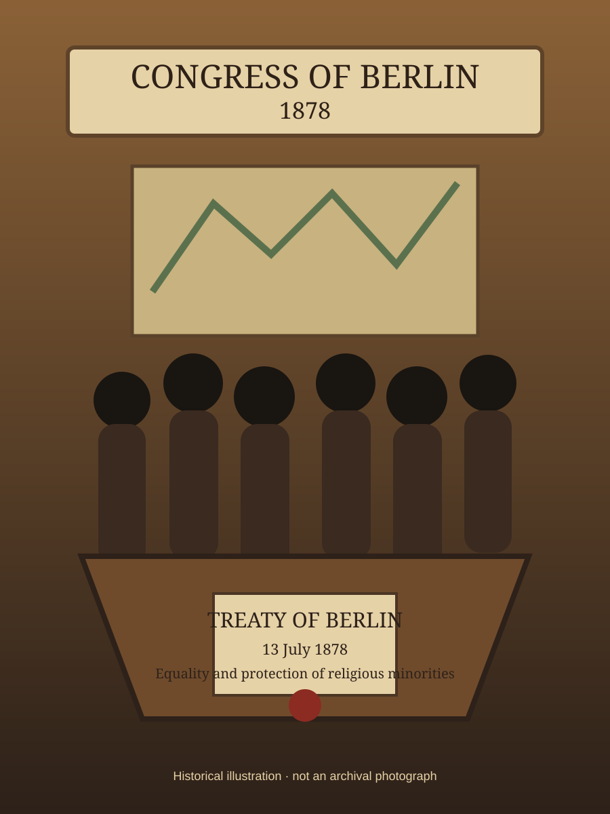

1878
קונגרס ברלין וזכויות היהודים
The Congress of Berlin and Jewish Civil Rights
קונגרס ברלין סימן שלב חדש בתולדות האמנציפציה היהודית: זכויות היהודים והמיעוטים הדתיים נעשו חלק מהתחייבויות בינלאומיות של מדינות הבלקן החדשות או המורחבות.

תעודת זהות מהירה
| שנה | 1878 |
|---|---|
| אירוע | קונגרס ברלין |
| מסמך מרכזי | חוזה ברלין |
| תאריך | 13 ביולי 1878 |
| סוג המסמך | אמנה בינלאומית |
| אזור מרכזי | הבלקן ומזרח אירופה |
| רמת זכויות | הכרה בינלאומית בעיקרון שוויון אזרחי ודתי |
1. רקע היסטורי
הקונגרס התכנס לאחר המלחמה הרוסית־עות'מאנית כדי להסדיר מחדש את המפה המדינית של הבלקן. לצד שאלות של גבולות, עצמאות והשפעה בין מעצמות, עלתה גם שאלת זכויות המיעוטים הדתיים.
2. משמעות ליהודים
הכרה בינלאומית במדינות מסוימות נקשרה להתחייבות שלא להפלות אזרחים בשל דתם. עבור יהודים ברומניה ובמדינות הבלקן הייתה זו הכרה חשובה בכך שזכויותיהם אינן רק עניין פנימי של המדינה, אלא חלק מהסדר בינלאומי.
3. עיקרי ההתחייבויות
חוזה ברלין כלל עקרונות של שוויון אזרחי ודתי והגנה על מיעוטים. בפועל, יישומם היה חלקי ולעיתים איטי, במיוחד ברומניה, אך עצם הכללתם באמנה בינלאומית הייתה תקדים משמעותי.
4. מורשת
קונגרס ברלין חיבר בין אמנציפציה יהודית לבין משפט בינלאומי והגנת מיעוטים. הוא המחיש שגם כאשר עקרונות שוויון מוכרים באמנה, נדרש מאבק ממושך כדי להפוך אותם למציאות יומיומית.